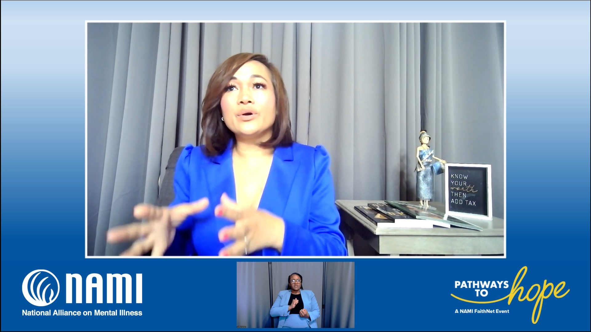

NAMI Faith Program
About
Video editing for NAMI Faith Program mental health initiative, creating sensitive and impactful content to support mental health awareness in faith communities.
Role
Editor
Tools
- Premiere - Edit
- Davinci Resolve - Color
- After Effects/Fusion - Motion Graphics
- Photoshop
- Ableton Live - Sound Mix
Deliverables
- Zoom Meeting for the annual conference - 1hr to 1h30
- Individual Speakers Videos - 20 to 40 mins
- Subtitled versions, American Sign Language Versions
- Custom graphics
- Fixing footage/audio issues
Stills
